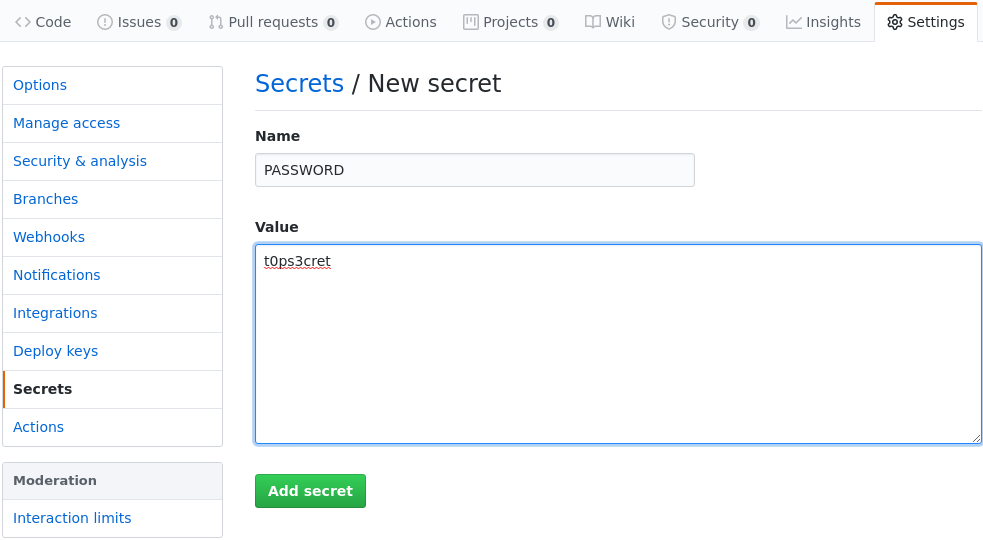

Publishing your Docker images with Github Actions
Last weekend I was playing around with Github Actions and it blew my mind! Basically it's another CI tool, like CircleCI, Travis, or Gitlab CI/CD but it is from Github.
I found four things that attracted me:
It is free for public repositories or 2000 minutes free for private repositories.
It is easy to use (it uses YAML syntax).
There is a good official documentation.
The CI tool and your code live in the same place.
Having seen these benefits, I decided to learn a little about it and share my experience. In this post I will show you how I use Github Actions to build, test and publish my Docker images.
Introduction
Github calls Workflows to custom automated processes that you can configure in your Github repository to build,
test, package, release, or deploy any project. These workflows, written in yaml, need to be stored in the
.github/workflows directory in the root of your repository. You can create more than one workflow in a repository.
Workflows must have at least one job, and jobs contain a set of steps that perform individual tasks. Steps
can run commands or use an action. We will see later what an action is.
Setting up your workflow
To start using Github Actions, you need to create the .github/workflows directory in the root of your repository,
and then create a yaml file with the workflow definition. The file name doesn't matter, so you can use any file
name, but it must be .yaml or .yml. In this case my workflow will build, test and publish docker images, so my
yaml file looks like this:
name: Publish Docker Image on: push: # Publish `master` as Docker `latest` image. branches: - master # Publish `v1.2.3` tags as releases. tags: - v* # Run tests for PRs to master branch. pull_request: branches: - master env: IMAGE_NAME: hello-world jobs: # Run tests. test: runs-on: ubuntu-latest steps: - uses: actions/checkout@v2 - name: Run tests run: | if [ -f docker-compose.test.yml ]; then docker-compose --file docker-compose.test.yml build docker-compose --file docker-compose.test.yml run sut else docker build . --file Dockerfile fi push: # Ensure test job passes before pushing image. needs: test runs-on: ubuntu-latest if: github.event_name == 'push' steps: - uses: actions/checkout@v2 - name: Build image run: docker build . --file Dockerfile --tag $IMAGE_NAME - name: Log into Docker Hub registry run: echo "${{ secrets.DOCKER_PASS }}" | docker login -u ${{ secrets.DOCKER_USER }} --password-stdin - name: Push image run: | IMAGE_ID=${{ secrets.DOCKER_USER }}/$IMAGE_NAME # Change all uppercase to lowercase IMAGE_ID=$(echo $IMAGE_ID | tr '[A-Z]' '[a-z]') # Strip git ref prefix from version VERSION=$(echo "${{ github.ref }}" | sed -e 's,.*/\(.*\),\1,') # Strip "v" prefix from tag name [[ "${{ github.ref }}" == "refs/tags/"* ]] && VERSION=$(echo $VERSION | sed -e 's/^v//') # Use Docker `latest` tag convention [ "$VERSION" == "master" ] && VERSION=latest # verbose echo IMAGE_ID=$IMAGE_ID echo VERSION=$VERSION # tag the built image and push it to Docker Hub docker tag $IMAGE_NAME $IMAGE_ID:$VERSION docker push $IMAGE_ID:$VERSION
Let's break down this file a little bit to explain every step:
name
This key defines the name of the workflow. You can use whaterver name you prefer the most.
on
Determines when this workflow will run:
on: push: # Publish `master` as Docker `latest` image. branches: - master # Publish `v1.2.3` tags as releases. tags: - v* # Run tests for any PRs. pull_request: branches: - master
In this case GitHub will run this workflow when you push changes to your master branch, when you push a new tag
starting with v (for example tag v1.2.3), or when you create a pull request to the master branch.
You can find more information here
env
This key defines global environment variables. I used it for the Docker image name hello-world.
jobs
A workflow is made up of one or more jobs. Jobs run in parallel by default. To run jobs sequentially, you can
define dependencies on other jobs using the needs key with the job name value.
jobs: test: runs-on: ubuntu-latest ... ... ... push: needs: test runs-on: ubuntu-latest if: github.event_name == 'push'
In this Workflow, I defined two jobs: test and push. The job test will be used to perform tests on the
built image, and push will be used to push the image to Docker Hub. push depends on test and will continue
its execution only if the job test successfully passed. While test will be always executed, push will only
be executed if the event was git push. Both jobs will run in a virtual Ubuntu environment.
steps
A job is made of small sub-tasks called steps. Each step is responsible to perform a task that performs some
operation. Steps can run commands, setup tasks, or run an action.
Actions are individual tasks that you can use to create jobs and customize your workflow. Actions are code, so you can edit, reuse, share, and fork them like code. You can create your own actions or use actions shared by the GitHub community
steps: - uses: actions/checkout@v2 - name: Run tests run: | if [ -f docker-compose.test.yml ]; then docker-compose --file docker-compose.test.yml build docker-compose --file docker-compose.test.yml run sut else docker build . --file Dockerfile fi
In the job test, I use an action that checks-out the repository under $GITHUB_WORKSPACE, and then execute a
system unit test service (sut) if it is defined. See also https://docs.docker.com/docker-hub/builds/automated-testing/
You can create a docker-compose.test.yml file which defines a sut service that lists the tests to be run.
version: '3.3' services: sut: build: context: . dockerfile: Dockerfile command: run_test.sh
Finally if test successfully passed and the Github event was a push, Github will execute the job push:
push: # Ensure test job passes before pushing image. needs: test runs-on: ubuntu-latest if: github.event_name == 'push' steps: - uses: actions/checkout@v2 - name: Build image run: docker build . --file Dockerfile --tag $IMAGE_NAME - name: Log into Docker Hub registry run: echo "${{ secrets.DOCKER_PASS }}" | docker login -u ${{ secrets.DOCKER_USER }} --password-stdin - name: Push image run: | IMAGE_ID=${{ secrets.DOCKER_USER }}/$IMAGE_NAME # Change all uppercase to lowercase IMAGE_ID=$(echo $IMAGE_ID | tr '[A-Z]' '[a-z]') # Strip git ref prefix from version VERSION=$(echo "${{ github.ref }}" | sed -e 's,.*/\(.*\),\1,') # Strip "v" prefix from tag name [[ "${{ github.ref }}" == "refs/tags/"* ]] && VERSION=$(echo $VERSION | sed -e 's/^v//') # Use Docker `latest` tag convention [ "$VERSION" == "master" ] && VERSION=latest # verbose echo IMAGE_ID=$IMAGE_ID echo VERSION=$VERSION # tag the built image and push it to Docker Hub docker tag $IMAGE_NAME $IMAGE_ID:$VERSION docker push $IMAGE_ID:$VERSION
Here we will checks-out again the repository under $GITHUB_WORKSPACE in a different Ubuntu environment and then
it will execute the following tasks:
Build the Docker image using
docker buildcommmand.Log in to Docker Hub (needed to push an image)
Tag the Docker built image.
Push the tagged image to Docker Hub.
Secrets
In this workflow, I've used secrets. Secrets are encrypted environment variables that live in the context named
secrets and are only exposed to Github Actions. Secrets are very useful for sensitive variables like passwords. You
can add them in the repository Settings:

Once you have configured your secrets, you can use them from the context named secrets:
${{ secrets.<name> }}
Workflows logs
Once you have pushed a workflow in your repository, when one of the GitHub events (defined in the yaml file) triggers the workflow, you can see the pipeline logs in the Actions tab.
Conclusions
I found Github Actions very powerful and easy to configure a CI/CD workflow for your application or whatever you may want to build. It requires minimal configuration and its syntax and official documetation helps to make it a very friendly tool. There are many other tools that are very similar, but what I like is that the code and the tool live in the same place, so you don't have to signing up to other vendors like Travis or CircleCI.
If you want to see some examples, check these respositories:
Did you find any errors? Please send me a
pull request. The code of this article is available on Github.
Comments
Comments powered by Disqus